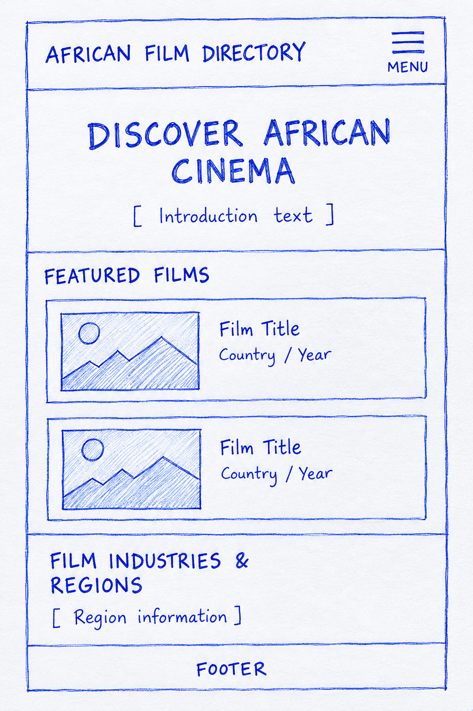
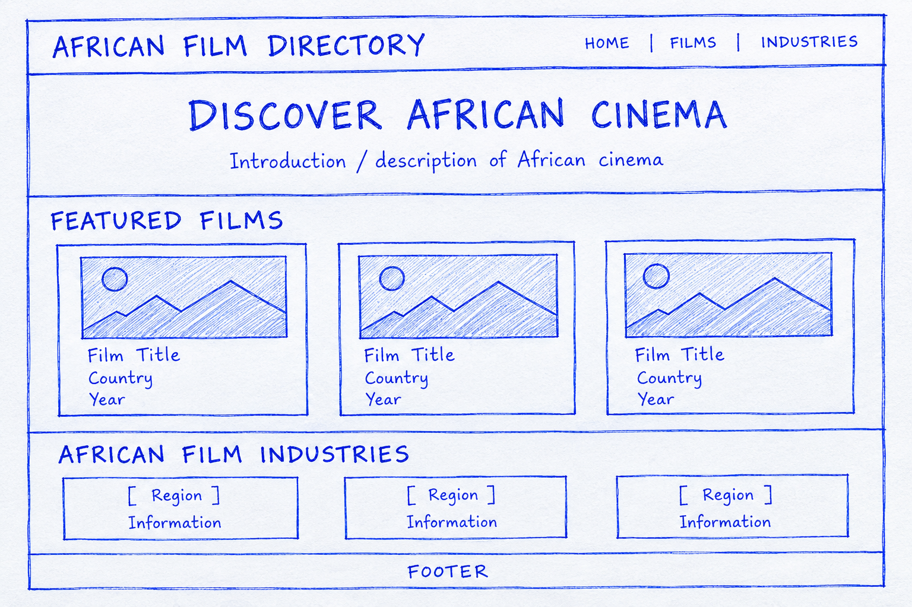

1. Site Name
African Film Directory
The name clearly describes the purpose of the website: a directory where visitors can discover and learn about films from different African countries and film industries.
Optional domain: africanfilmdirectory.com
2. Site Purpose
The African Film Directory will provide a central place for users to discover and learn about selected African films and film industries. Film information will include titles, countries of origin, release years, genres, languages, directors, and brief descriptions.
The website will contain three main pages: a home page introducing African cinema and highlighting selected films and film industries, a films page containing a searchable and filterable collection of films, and a page providing information about African film industries and regions.
3. Scenarios
- What African films can I discover from different countries and film industries?
- How can I find an African film by genre, country, language, or release year?
- Who directed a particular African film, and what is the film about?
- What are some of the different film industries and regions represented in African cinema?
4. Color Scheme
The color scheme is designed to give the site a warm, cinematic, and readable appearance while maintaining sufficient contrast.
Deep Charcoal
#1F2933
Used for the header, footer, major headings, and dark text areas.
Golden Amber
#D99A2B
Used for accents, buttons, links, borders, and highlighted elements.
Warm Ivory
#FFF8E7
Used as the main page background and light content areas.
5. Typography
Montserrat — Headings
Montserrat will be used for the main title, section headings, and other prominent headings to create a clear visual hierarchy.
Open Sans — Body Text
Open Sans will be used for paragraphs, film descriptions, navigation text, labels, and other general content because it is easy to read across screen sizes.
6. Wireframe
The wireframe is a black-and-white sketch showing the responsive home page in both a small/mobile viewport and a large desktop/tablet viewport.
Required student-created wireframes
- Small viewport: header/navigation, introduction, featured films, film-industry/region content, and footer.
- Large viewport: responsive navigation, introduction/hero area, featured films arranged across the page, film-industry/region content, and footer.
Small Viewport Sketch

Large Viewport Sketch

Project Page Structure
- Home: Introduction to African cinema, selected films, and highlighted film industries.
- Films: Searchable and filterable collection of African films.
- Film Industries & Regions: Information about different African film industries and regions.